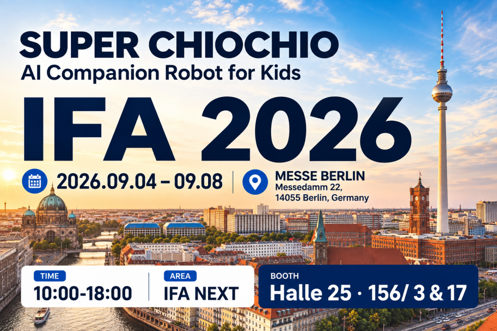
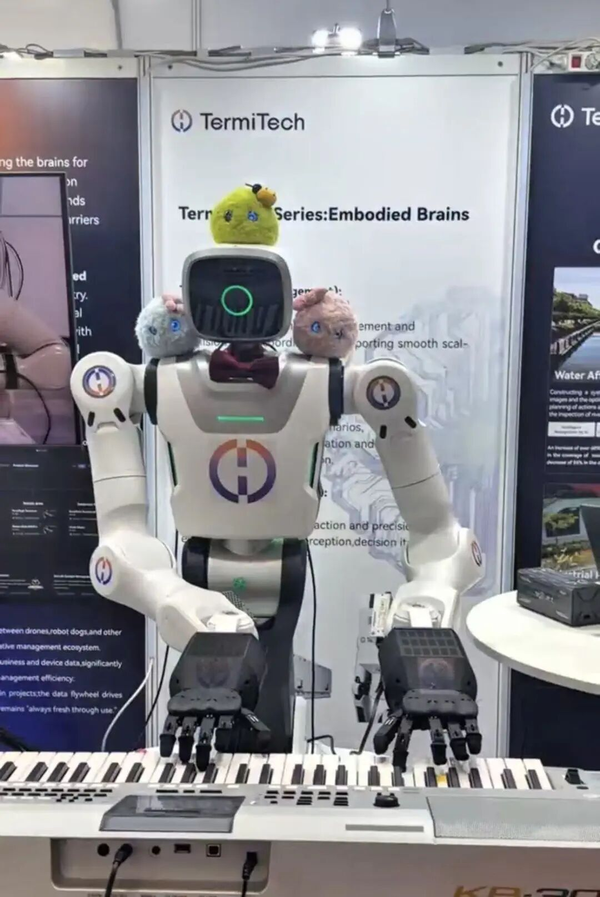
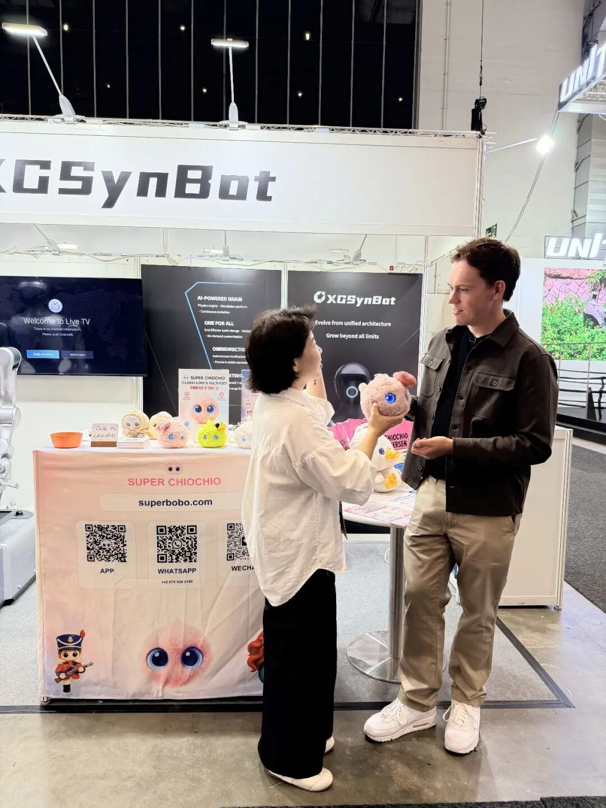
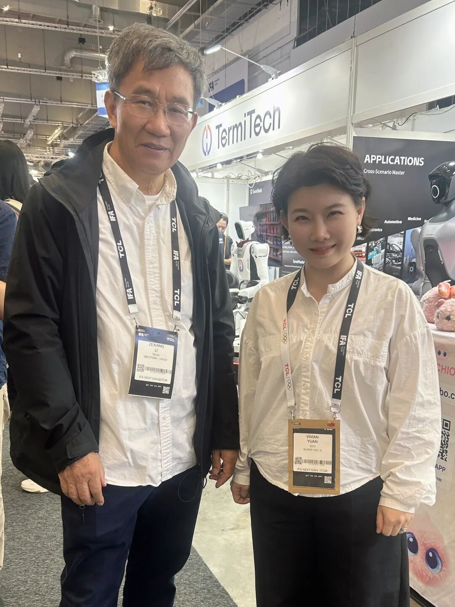
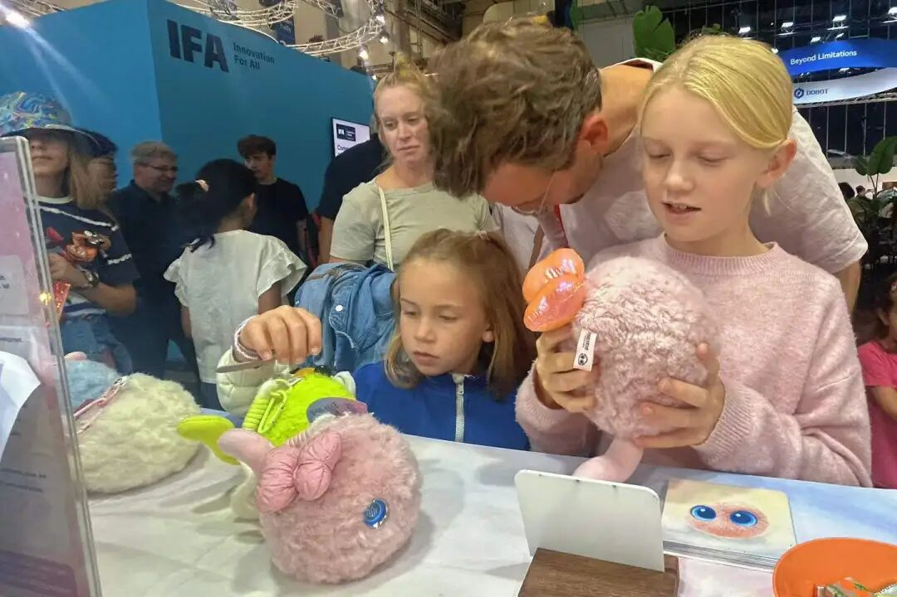
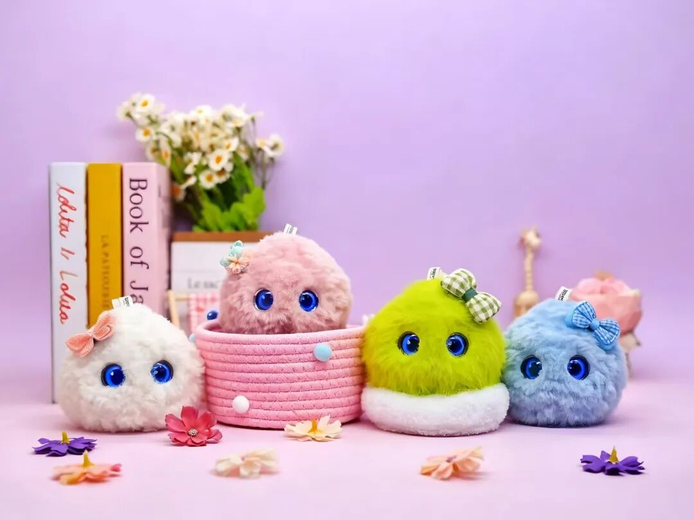

柏林国际电子消费品展览会（IFA），是全球规模最大、影响力最强的消费电子展之一，每年吸引全球科技企业、媒体与行业从业者齐聚柏林，共同见证前沿科技成果。 9 月 4 日 — 8 日，超级球球登陆德国柏林 IFA 展会，带着中国原创儿童 AI 机器人产品亮相国际舞台，向世界展示中国具身 AI 的创新实力。

展会现场高光不断，上演了极具氛围感的名场面🎵
晨昏线 TermiBrain 人形机器人现场弹奏，超级球球放声开唱，机器界的 “高山流水” 在此相遇。一曲合奏惊艳全场，硬核科技碰撞浪漫治愈，这场中国 AI 组合的跨界合奏，成为本届 IFA 的热门看点。

展会现场，除了精彩的 AI 跨界合奏演示，展台也迎来了来自全球多个国家的代理商与渠道合作伙伴。团队与来访客商深入交流产品优势、合作模式与海外落地规划，围绕市场推广、区域代理等议题展开多轮洽谈，持续拓展海外销售网络，为产品出海布局积蓄动能。

本次出海参展，超级球球收获了海内外的高度关注：
✅ BBC 专程来到展台专访超级球球，给予产品极高关注度
✅ 全球十余家媒体争相采访，数十家媒体到场拍摄、咨询交流
✅ 国内行业大咖亲临展台深度交流，大疆教父李泽湘老师、XbotPark 机器人基地联合发起人甘洁教授等莅临现场，一同探讨具身智能的发展方向

超级球球，是面向儿童打造的 AI 成长陪伴机器人。不止是酷炫的前沿科技，更承载温暖的陪伴内核。依托具身智能技术，为孩子带来有情感、可互动的陪伴体验，守护儿童成长。

从国内走向世界，超级球球持续在国际舞台发声，在 IFA 展会上向全球客商展示中国儿童 AI 产品的创新魅力❤️

依托过硬的产品力与用户口碑，超级球球 AI 儿童成长陪伴机器人，国内同类产品销量登顶第一。未来我们也将持续打磨产品，携手海内外合作伙伴，把充满温度的 AI 陪伴带给更多家庭。